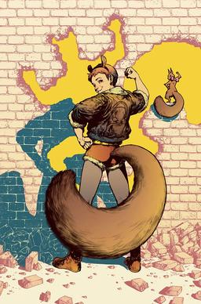
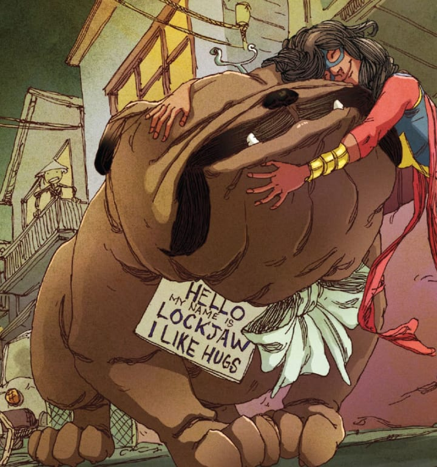
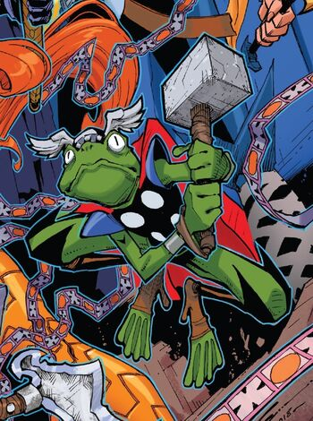
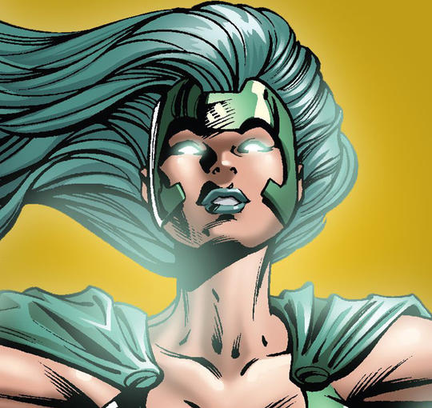

My Top Five Favorite Underrated Super Heroes
Human history is chalk full of super heroes. Comic books and movies have been popular with people since the first super hero - The Phantom - graced a newspaper comic pages in 1936. Ever since, the thought of super heroes has spurred on the general public and has created a huge market for anything super. Marvel Entertainment and DC Entertainment hopped on that train and have turned out to be very successful. That being said, there are more popular heroes. You know, the ones that get all the attention. Funny enough, there are A TON of characters that are just as awesome, but do not get any of the limelight. Here, we are going to look at some of my favorite underrated and under appreciated Marvel heroes!
Underrated Marvel Super Heroes
| Name |
Alias |
Image |
Superpower |
Weakness |
| Doreen Allene Green |
Squirrel Girl |

|
- Superhuman agility, senses, and strength
- Prehensile tail
- Razor-sharp claws
- Retractable knuckle spikes
- Ability to communicate with squirrels
|
- Emotionally attached to her squirrels
- Heightened sense of concern for others
- Weak to mental attacks
|
| Lockjaw |
Lockjaw |

|
- Teleportation
- Telekinesis
- Super-Strength
- Inter-Dimensional Travel
- Being a Good Boy
|
- No opposable thumbs
- Can become exhausted by using his powers
- Is a literal dog
|
| Marc Spector |
Moon Knight |

|
- Strength, endurance, and reflexes are enhanced depending upon the phases of the moon
- Expert detective
- Proficient in martial arts and armed combat
|
- Has 3 alter egos
- Dependent on the moon
- Relies to heavily on healing powers
|
| Simon Walterson |
Throg |

|
- Amphibian Physiology
- Powers of Thor through a sliver of Mjolnir
- Super strength and endurance
|
- Can not communicate with humans
- Is small in stature
- Relies on Mjolnir sliver
|
| Lorna Dane |
Polaris |

|
- Magnetism
- Force Field and energy manipulation
- Control of elements
|
- Magnetic powers alter her mental stability
- Anger Issues
- Lineage
|
All of these super heroes are, well, super! I adore them all, some due to their abilites and some due to their stories. They are all fun, interesting, and different compared to your classic heroes. Heroes, assemble!